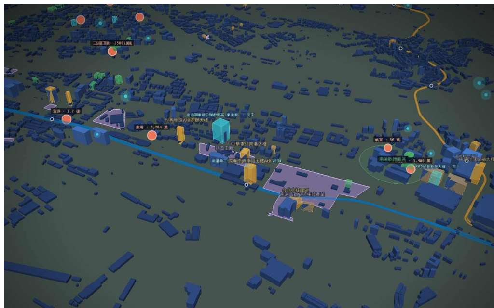

睿鏡
PeakLens
by PickPeak · FUNRAISE MCP
投資人鏡
開發商鏡
企業選址鏡
城市治理鏡
學研鏡
沉浸
平衡
標註
密度
D
◎
南港區 · 2028 年 · 規劃中 3 · 建照 9 · 都更 11
25.054N 121.606E · 2.4 km · -36°
1
南港調車場公辦都更 東街廓
27F · 2028
2
HCBD 虹創科技大樓
18F · 2026
3
雲豹能源 · 取得
3.1 億 · 2026-06
4
115建字第0053號
新建 · 24–48 月後完工
圖例 · 7 / 11 圖層
商辦存量 34
未來供給 3
建照 9
都更單元 11
上市櫃交易 4
捷運 6 線
2012
2030
2026
「2028 年南港會長出什麼」
送出
開發商鏡 · 供給雷達
FUNRAISE MCP · LIVE
2026-09-14
11:52:07 TPE
2,310
台北市都更地區／單元
98
114–115 年建照（快照）
13
規劃／興建中案
73
重劃／區段徵收
各區都更件數 · urban-renewal.aggregate
大安區
360
中山區
294
中正區
236
士林區
233
信義區
174
地圖標註 ①–④ · 對應卡片
① 南港調車場公辦都更 東街廓
27F · 2028
② HCBD 虹創科技大樓
18F · 2026
③ 雲豹能源 取得台壽南港大樓
3.1 億
④ 115建字第0053號
新建
來源與工具呼叫 · Provenance
future-dev.search_future_dev
district=南港區
2 案 · 303 ms
taipei-licenses.search_building_licenses
year=114
9 張 · 518 ms
urban-renewal.search_urban_renewal
district=南港區
11 筆 · 226 ms
睿鏡 · 回答
南港區到 2028 年：規劃／興建中 2 案、合計約 45 個樓層；另有 9 張 114–115 年建照。來源：FUNRAISE 未來開發資料庫 · 臺北市建照存根。